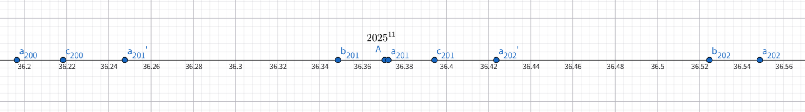

Expansion of the Capacity
問題
この問題では、\(\log_3 2=0.631,\log_3 5=1.465\)とみなしてよいものとします。
カラスのREDOXは場に \(10\) 個の空の箱を用意し、東西に一列に並べました。一つの箱にはボールを一つ入れることができます。
これから、次の操作が \(2025^{11}\) 回行われます。
- もし場にある箱のうち四分の三以上にボールが入っているならば、場にある箱の数の半分 (ただし、小数点以下は切り捨て)だけ列の東側に空の箱を一列に追加する。 追加した場合、箱の拡張を一回行ったということとする。
- 猫のCPPが最も西にある空の箱に一つにボールを一つ入れる。
\(2025^{11}\) 回の操作で、カラスのREDOXは合計で何回箱の拡張を行っていますか。
問題情報
出題者作
ネタの参考: Java - ArrayList
難易度: 5 / 5
解答・解説
答 : 202回
※// ~ は答案に書く必要はありません。
\(n\)回箱の拡張を行った直後の箱の個数を\(a_n\)とし、\(a_0=10\)とする。
以下、\(n\)は非負整数とする。
条件から\(a_{n+1}=\left\lfloor\dfrac{3}{2}a_n\right\rfloor\)であるから、
$$
\begin{equation}
a_{n+1} =
\left\{ \,
\begin{aligned}
&\dfrac{3}{2} a_n - \dfrac{1}{2} &(a_nが奇数のとき) \\
&\dfrac{3}{2} a_n &(a_nが偶数のとき) \\
\end{aligned}
\right.
\end{equation}
$$
が成立する。
↑10点
ここで、実数列\(\{b_n\}\)を次のように定義する。 $$ b_0 = 10, b_{n+1} = \dfrac{3}{2} b_n - \dfrac{1}{2} $$ また、実数列\(\{c_n\}\)を次のように定義する。 $$ c_0 = 10, c_{n+1} = \dfrac{3}{2} c_n $$
補題1. \(n\geqq1\)のとき、\(b_n \lt a_n\)が成り立つ。
[証明]
(1) \(n=1\)のとき、\(b_1=\frac{29}{2},a_1=15\)であるので補題1は成り立つ。
(2) \(n=k\)のとき補題1が成り立つと仮定すると、
数学的帰納法の仮定から\(b_{k+1}=\dfrac{3}{2}b_{k}-\dfrac{1}{2}\lt\dfrac{3}{2}a_{k}-\dfrac{1}{2}\leqq a_{k+1}\)が成り立つので、
\(n=k+1\)のとき補題1は成り立つ。
(1),(2)から、補題1は示された。
補題2. \(n\geqq2\)のとき、\(a_n \lt c_n\)が成り立つ。
[証明]
(1) \(n=1\)のとき、\(a_2=22,c_2=\frac{45}{2}\)であるので補題2は成り立つ。
(2) \(n=k\)のとき補題1が成り立つと仮定すると、
数学的帰納法の仮定から\(c_{k+1}=\dfrac{3}{2}c_{k}\gt\dfrac{3}{2}a_{k}\geqq a_{k+1}\)が成り立つので、
\(n=k+1\)のとき補題2は成り立つ。
(1),(2)から、補題2は示された。
補題1、補題2から、すべての2以上の整数\(n\)について\(b_n\lt a_n\lt c_n\)が成り立つ。・・・(＊)
↑20点
\({b_n}\)の一般項を求める。
\(b_{n+1} = \dfrac{3}{2} b_n - \dfrac{1}{2}\)は\(b_{n+1}-1=\dfrac{3}{2}\left(b_n-1\right)\)と変形でき、\(b_0-1=9\)であるので、
\(b_n-1=9\times\left(\dfrac{3}{2}\right)^n\)である。したがって、\(b_n=9\times\left(\dfrac{3}{2}\right)^n+1\)である。
↑10点
\({c_n}\)の一般項を求める。
\({c_n}\)は初項\(c_0=10\)、公比\(\frac{3}{2}\)の等比数列だから、\(c_n=10\times\left(\dfrac{3}{2}\right)^n\)
↑10点
// \(a_n\lt 2025^{11} \lt a_{n+2}\)となる非負整数\(n\)を見つけたい。
\(c_n\lt 2025^{11}\)となる最大の非負整数\(n\)を求める。
\(c_n=10\times\left(\dfrac{3}{2}\right)^n \gt 0\)だから、3を底とする\(c_n\lt 2025^{11}\)の両辺の対数をとると、
$$ \log_3 10 + n \log_3 \dfrac{3}{2} \lt 11\log_3 2025 $$
$$ n \log_3 \dfrac{3}{2} \lt 11\log_3 2025 - \log_3 10 $$
$$ (1-\log_3 2)n \lt 11(4\log_3 3+2\log_3 5)-(\log_3 2+\log_3 5) = 44 -\log_3 2 +21\log_3 5 $$
\(1-\log_3 2\gt0\)から
$$ n \lt \dfrac{44-\log_3 2+21\log_3 5}{1-\log_3 2} = \dfrac{44-0.631+21\times1.465}{1-0.631}= 200.90・・・ $$
したがって、\(c_{200}\lt2025^{11}\lt c_{201}\)が成り立つ。
↑15点
\(b_n-1\gt 2025^{11}\)となる最小の非負整数\(n\)を求める。
\(b_n=9\times\left(\dfrac{3}{2}\right)^n+1\)だから、3を底とする\(b_n-1\gt 2025^{11}(\gt0)\)の両辺の対数をとると、
$$ \log_3 9 + n\log_3 \dfrac{3}{2} \gt 11\log_3 2025 $$
$$ n\log_3 \dfrac{3}{2} \gt 11\log_3 2025 - \log_3 9 $$
$$ (1-\log_3 2)n \gt 11(4\log_3 3+2\log_3 5)-2 = 42+22\log_3 5 $$
\(1-\log_3 2\gt0\)から
$$ n \gt \dfrac{42+22\log_3 5}{1-\log_3 2} = \dfrac{42+22\times1.465}{1-0.631} = 201.16・・・ $$
したがって、\(b_{201}-1\lt2025^{11}\lt b_{202}-1\lt b_{202}\)が成り立つ。
↑15点
(＊)から、次の不等式が成り立つ。 $$ a_{200} \lt c_{200} \lt 2025^{11} \lt b_{202} \lt a_{202} $$
補題3. \(a_{201} \lt 10\times\left(\dfrac{3}{2}\right)^{201}, 9\times\left(\dfrac{3}{2}\right)^{202} \lt a_{202}\)
[証明]
(＊)から、\(a_{201}\lt c_{201} = 10\times\left(\dfrac{3}{2}\right)^{201},9\times\left(\dfrac{3}{2}\right)^{202} = b_{202}-1\ \lt b_{202} \lt a_{202}\)
したがって補題3は示された。
補題4. \(9\times\left(\dfrac{3}{2}\right)^{201} \lt 2025^{11} \lt 10\times\left(\dfrac{3}{2}\right)^{201}\)
[証明]
$$ \log_3 9\times\left(\dfrac{3}{2}\right)^{201} = 2 + 201\times(1-\log_3 2) = 76.169 $$
$$ \log_3 2025^{11} = 11( 4 + 2\log_3 5 ) = 76.23 $$
$$ \log_3 10\times\left(\dfrac{3}{2}\right)^{201} = \log_3 2 + \log_3 5 + 201\times(1-\log_3 2) = 76.265 $$
よって、\(\log_3 9\times\left(\dfrac{3}{2}\right)^{201} \lt \log_3 2025^{11} \lt \log_3 10\times\left(\dfrac{3}{2}\right)^{201}\)
底3は1より大きいから、\(9\times\left(\dfrac{3}{2}\right)^{201} \lt 2025^{11} \lt 10\times\left(\dfrac{3}{2}\right)^{201}\)
また、補題3,4から、 $$ \dfrac{3}{4}a_{201}\lt \dfrac{3}{4}\times 10\times\left(\dfrac{3}{2}\right)^{201} \lt 9\times\left(\dfrac{3}{2}\right)^{201} \lt 2025^{11} $$ $$ \dfrac{3}{4}a_{202}\gt \dfrac{3}{4}\times 9\times\left(\dfrac{3}{2}\right)^{202} = \dfrac{3}{4}\times 9\times \dfrac{3}{2} \times\left(\dfrac{3}{2}\right)^{201} \gt 10 \times\left(\dfrac{3}{2}\right)^{201} \gt 2025^{11} $$ よって、 $$ \dfrac{3}{4} a_{201} \lt 2025^{11} \lt \dfrac{3}{4} a_{202} ・・・ (＊＊)$$
↑30点
したがって、\(2025^{11}\)回の操作が終わったときにはすでに202回目の箱の拡張が行われており、また203回目の箱の拡張はまだ行われていない。
ゆえに、\(2025^{11}\) 回の操作で、カラスのREDOXは合計で202回箱の拡張を行っている。
↑10点
END
↑対数目盛です; \(a_{201}'=\dfrac{3}{4}a_{201},a_{202}'=\dfrac{3}{4}a_{202}\)です
出題者コメント
ポイント
実数の等比数列で挟んで対数を使うことが重要でした。
不等式の推移率を使いこなすことも大切でした。
いろいろ
- 数直線をかくとわかりやすいです。
- (＊＊)を証明するために頑張ったわけです。
- \(a_{201}\)と\(2025^{11}\)の大小関係を求める必要はありません。
- 底が3の対数を使うこともあるのですね。
裏話
- 最初\(2025^{2}\)にしていましたが、33回計算すれば答えられてしまう(愚直な解法で制限時間内に解けてしまう)ので変更しました。